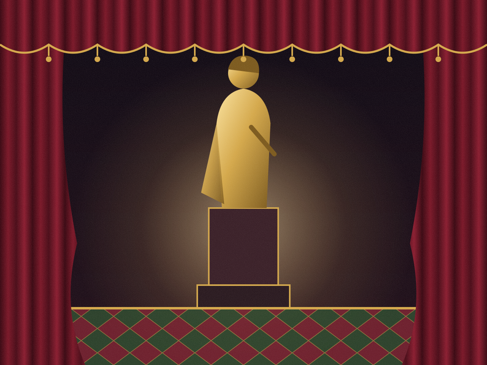
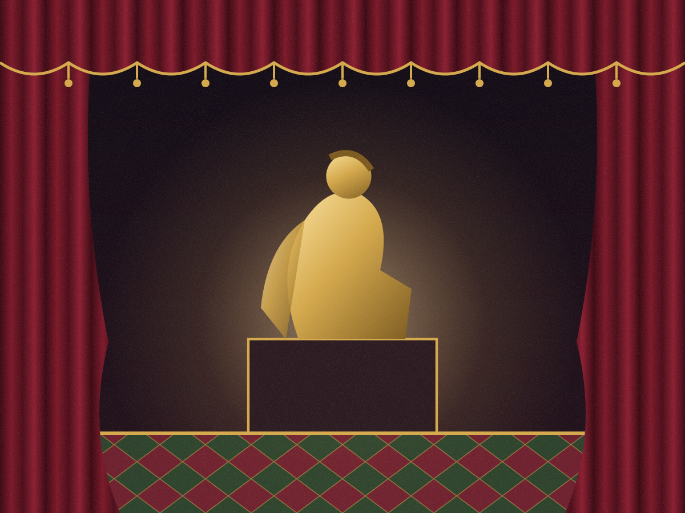
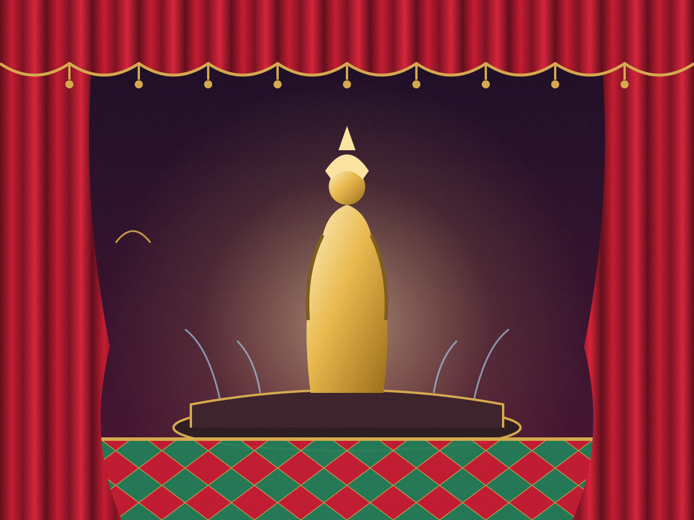

Первый Гоголь
Скульптор Николай Андреев изобразил Гоголя сгорбленным и печальным. В 1952 году памятник с площади убрали и поставили другой.
Принцесса Турандот из старой сказки загадывала загадки всем, кто просил её руки. Женихов давно нет, а скучать она не умеет.
Поэтому она вызывает вас: восемь загадок по Арбату, три тура. Отгадаете — признает поражение. Подскажут болтливые маски, но за каждую выболтанную разгадку очко её.
Турандот — китайская принцесса. Её придумали в Венеции, сыграли в Москве и поставили в бронзе на Арбате. На Арбате вообще все играют роли: два Гоголя, рыцари, которые не воевали, дом, который выглядит моложе своих лет.
Загадки принцесса загадывает обиняком: описывает то, что стоит на Арбате, и спрашивает о детали, которую видно только вблизи. Узнать, кто есть кто, можно, лишь подойдя к нему.
А в финале роли поменяются: загадку принцессе загадаете вы.
Сегодня и ежедневно на Арбате
Принцесса Турандот
или Восемь загадок Арбата
Претендент:ещё держится
«Угадал. Не радуйся, претендент: это была самая лёгкая»
Шесть героев из восьми загадок, не по порядку — на нашей сцене. Куда идти дальше, подскажет квест.

Бодрый Гоголь в начале бульвара. Он здесь не первый и не единственный.

Второй Гоголь — грустный, и сидит не на площади, а во дворе. Как он туда попал?

Китайская принцесса из венецианской сказки. Подойдите поближе: она загадает про себя.

Её написали из окна так, что картина стала знаменитой. Какую и где — найдёте в переулках.

Ему почти сто лет, а выглядит так, будто построен вчера.
Пара в бронзе в конце Арбата. Почему они стоят именно здесь?
Это не расследование, а турнир. Принцесса описывает предмет иносказанием: «Стою, а не сижу. Бодр, а не грустен». Вы узнаёте, о ком речь, подходите вплотную и находите деталь, о которой спрошено.
Подсказки — маски. Их три, третья — ответ с объяснением. Проиграть нельзя, но счёт принцесса ведёт.
Один код доступа на всю компанию. Квест в разработке, о старте объявим в Telegram.
Две минуты от метро «Арбатская». Квест открывается в браузере телефона.
Кто на чьём месте, кто кем притворяется, кто где живёт. Отгаданные загадки вычёркиваются на афише.
В финале загадку загадываете вы — и принцесса либо отгадает, либо признает поражение.
Улица, где у каждой роли есть настоящий адрес и год.
Скульптор Николай Андреев изобразил Гоголя сгорбленным и печальным. В 1952 году памятник с площади убрали и поставили другой.
Евгений Вахтангов поставил спектакль по пьесе-сказке венецианца Карло Гоцци о китайской принцессе. В нём играли маски итальянской комедии.
Архитектор Константин Мельников начал строить себе дом из двух врезанных друг в друга цилиндров в Кривоарбатском переулке.
Арбат стал первой пешеходной улицей Москвы.
Большую часть «Мёртвых душ» Гоголь написал в Риме — а продолжение сжёг уже в Москве.
Арбат — одна из старейших улиц Москвы и первая пешеходная. Вокруг — тихие переулки с особняками, театр Вахтангова и дома, где жили писатели, поэты и архитекторы.
Название «Арбат» чаще всего выводят из арабского «рабад» — «пригород», пришедшего через тюркские языки. Это версия, точного ответа нет.
Названия арбатских переулков — память дворцовых слобод: здесь жили мастера, которые обслуживали царский двор.
Квест начинается у метро «Арбатская», а заканчивается в конце Арбата, в трёх минутах от метро «Смоленская». Все загадки решаются снаружи.
Старт у памятника Гоголю в начале Гоголевского бульвара, в двух минутах от метро «Арбатская». Финиш у памятника Пушкину и Гончаровой в конце Арбата, около трёх минут до метро «Смоленская».
По нашей оценке, 1,5–2 часа: 8 загадок и около 2,5 км пешком.
Да. Основные загадки рассчитаны на взрослых и подростков, для младших есть задания по желанию. Принцесса насмешлива, но не страшная.
990 ₽ за квест: один код доступа на всю компанию. Хватит одного телефона.
Квест в разработке. Дату запуска объявим в Telegram-канале «Дворами».
Нет. Музеи на маршруте, в том числе дом Гоголя и дом Мельникова, — только снаружи. Билеты не нужны.
Да. Квест открывается в браузере телефона, дорогу к точкам показывает карта. Зарядите телефон перед стартом.
Спросить маски. Подсказок три, и третья — ответ с объяснением. Очко в этом случае достаётся принцессе, но проиграть нельзя.
Квест в разработке, взять дело можно будет здесь. Напишем в Telegram, как только занавес поднимется.
Исторические факты на этой странице сверены по публикациям: